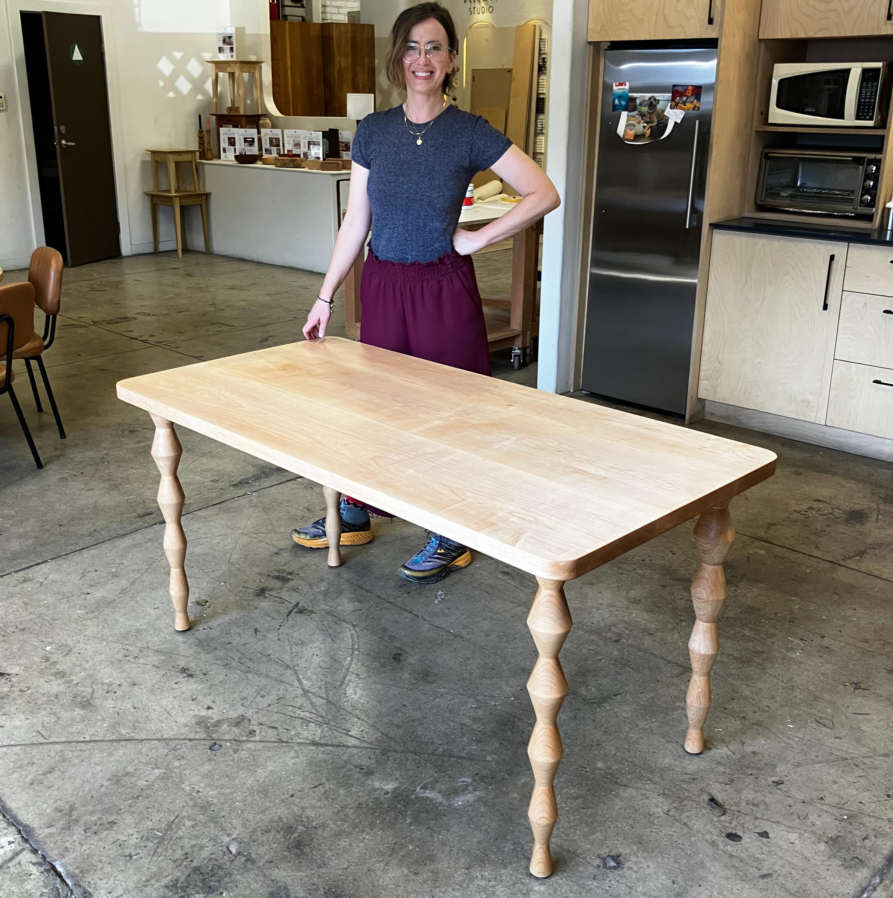
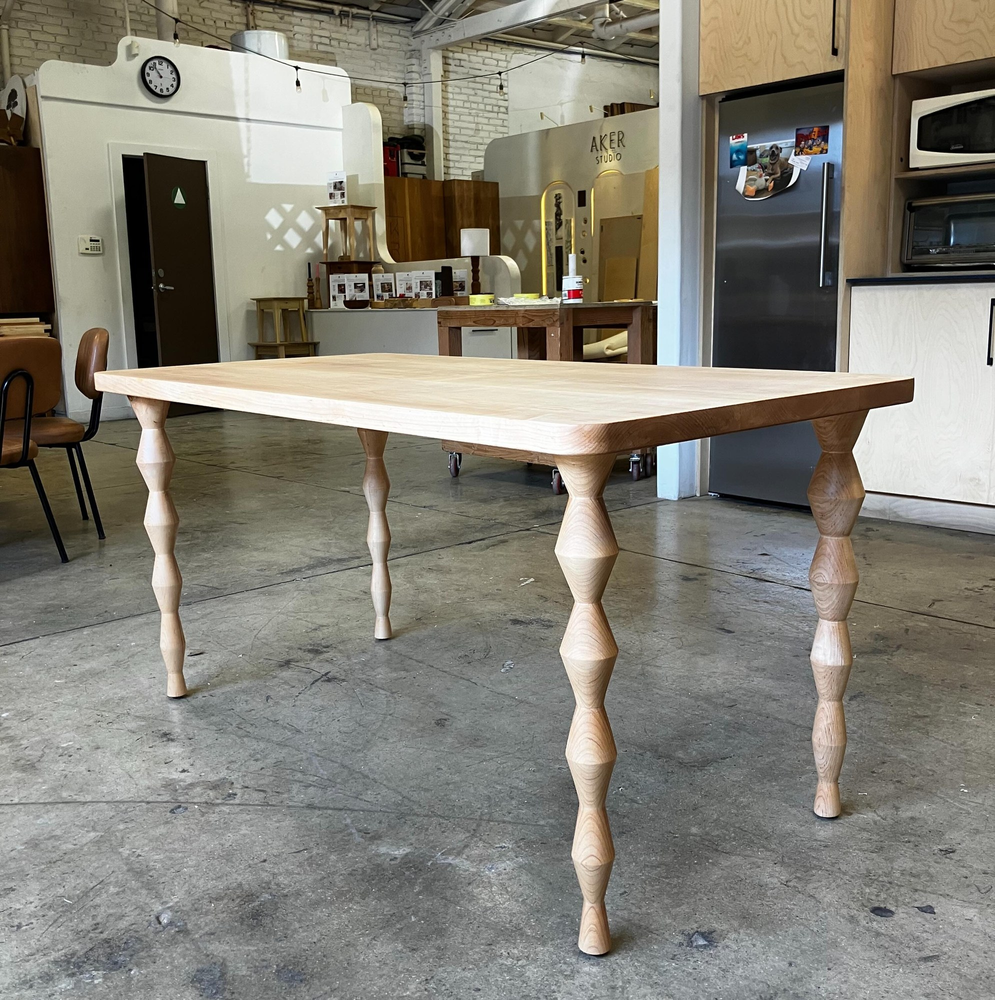
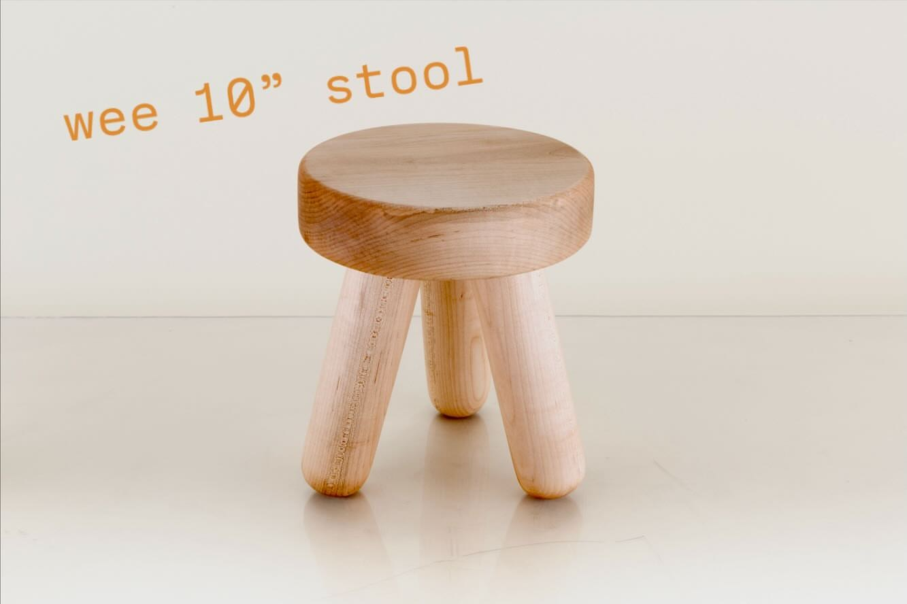
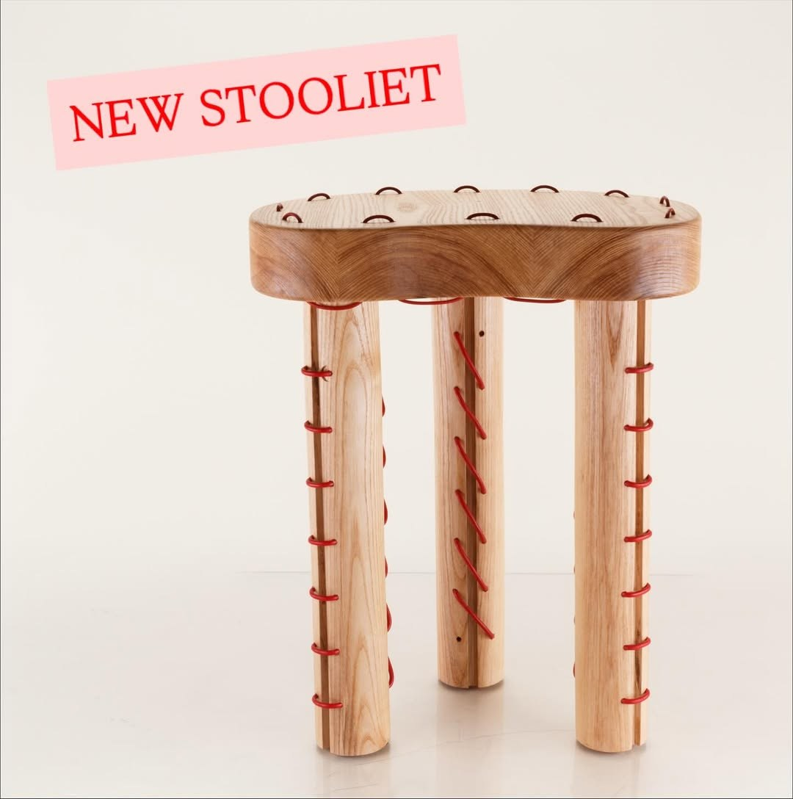
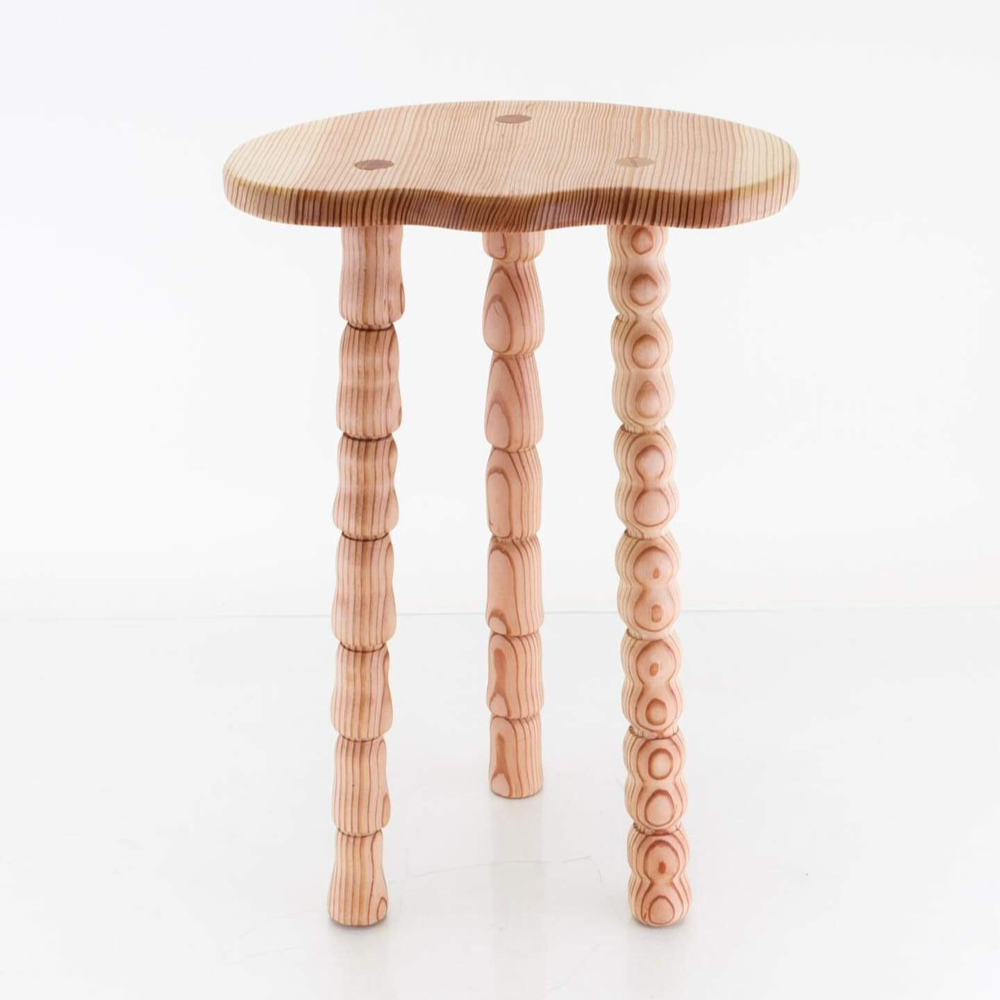
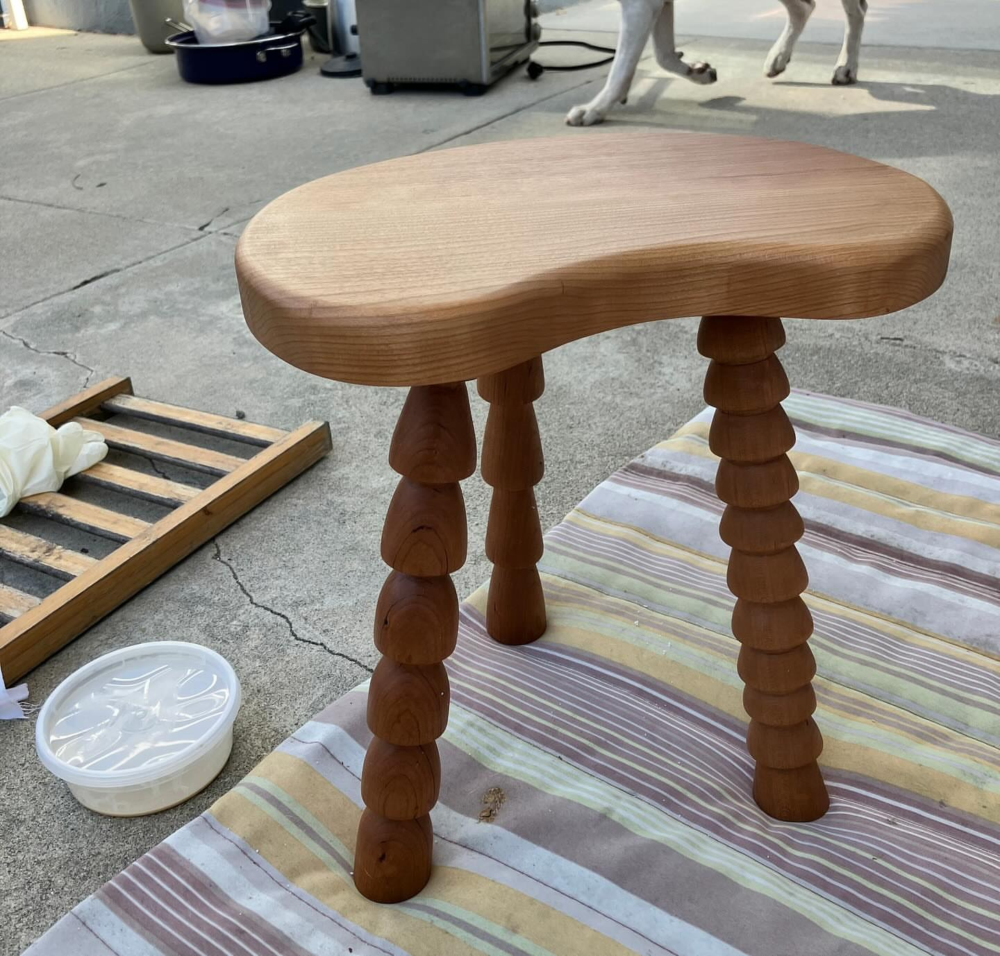
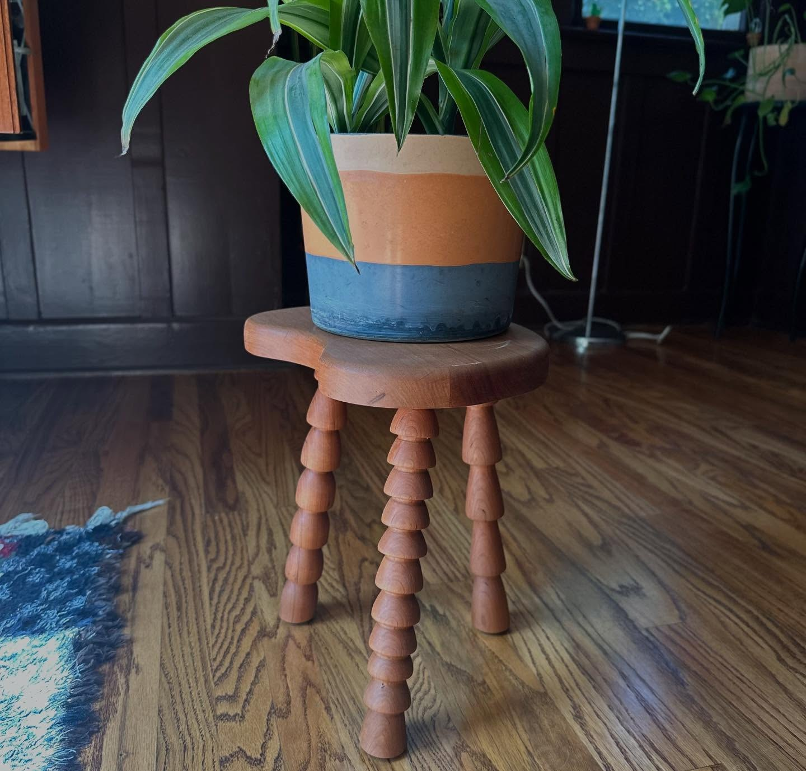

JULIET SENIFF · WOODWORKS
Furniture with
a point of view.
Handmade furniture and wooden objects.
A FEW THINGS MADE
Selected work
Furniture & objects
by Juliet Seniff
-

-

-

-

-

-

-

-

THE MAKER
Made by hand.
Made to be lived with.
A growing collection of furniture and wooden objects by Juliet Seniff.
This introduction can become more personal when Juliet is ready to add a little about her practice, materials, and process.
GET IN TOUCH
Have something
in mind?
For commissions and inquiries, contact details can be added here.
Juliet Seniff Woodworks